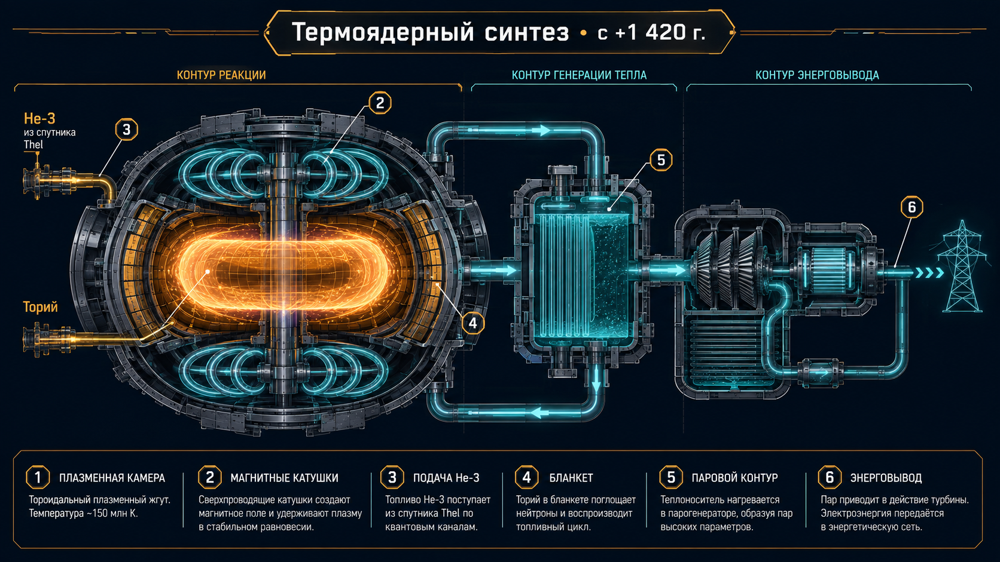

Глава 33: Термояд и энергия звёзд
«Мы зажгли звезду на этой планете. Не ту, что в небе — ту, что в реакторах. И держим её в клетке из магнитного поля.» — Первый Главный Инженер Термоядерного Комплекса Khar-Vexar, +1 200 г. Э.Е.
Связанные разделы: → см. [Гл.09, «Технологии»], → см. [Гл.19, «Ресурсы»], → см. [Гл.24, «Спутники»] Объём: 25 страниц Ключевой принцип: термоядерный синтез — основа энергетики Xha'Ruun (62% баланса). Два основных цикла: ториевый (Th → U-233, реакторы с расплавленной солью) и He-3 (D + ³He, магнитное удержание).
33.1 Ториевый цикл
33.1.1 Принцип
Ториевый топливный цикл — процесс, в котором ²³²Th (единственный природный изотоп тория) захватывает нейтрон и превращается в ²³³U — делящийся материал:
²³²Th + n → ²³³Th (β⁻, 22.3 мин) → ²³³Pa (β⁻, 27.0 сут) → ²³³U (деление)
Преимущество: выгорание ~98% топлива (против ~1% в урановых реакторах).
33.1.2 Ресурсная база
| Параметр | Значение |
|---|---|
| Общие запасы Th | 10.9 млрд кх |
| Доля Kharak | 52% |
| Доля Rhuval | 28% |
| Доля Vexar | 15% |
| Океанские россыпи | 5% |
| Обеспеченность | >50 000 циклов |
33.1.3 Реакторы MSR (Molten Salt Reactor)
Технология: топливо растворено в расплавленной соли (LiF-ThF₄-UF₄) при 371.3–452.9°X.
| Параметр | Значение |
|---|---|
| Тип | Реактор с расплавленной солью (MSR) |
| T рабочая | 398.5°X |
| Давление | 1 тяж (не требует прочного корпуса) |
| КПД термический | 52% |
| Выгорание топлива | 98% |
| Отходы | <5% уранового цикла (на кВт·ч) |
| Стоимость | 0.8 цента/кВт·ч |
| Количество | 280 реакторов (планета) |
33.2 He-3 цикл
33.2.1 Реакция
D + ³He → ⁴He (3.6 МэВ) + p (14.7 МэВ)
Реакция D-³He — «священный грааль» термояда. Её преимущества:
- Продукты: ⁴He + протон (не нейтроны) — минимум радиоактивности
- Высокий выход энергии: 18.3 МэВ на реакцию
- Нет активации материалов реактора
33.2.2 Добыча
| Параметр | Значение |
|---|---|
| Месторождение | Спутник Thel (36.2 мо, C-астероид) |
| Концентрация в реголите | 0.002–0.005% (по массе) |
| Общие запасы | ~60.6 млн кх |
| Годовая добыча | ~485 тыс. кх |
| Метод | Нагрев реголита → десорбция He-3 |
| Стоимость | 2.1 цента/кВт·ч (конечная) |
| Обеспеченность | ~100 000 циклов |
33.2.3 Токамаки
Для D-³He используются реакторы магнитного удержания — токамаки.

Рис. 33.1. Схема управляемого термоядерного реактора (токамак, D-³He): плазменный жгут в форме тора, магнитные катушки-петли, подача He-3, бланкет, паровой контур, энерговывод — ART-000010.
| Параметр | Значение |
|---|---|
| Тип | Токамак (магнитное удержание) |
| T плазмы | 8 × 10⁸ K |
| Плотность плазмы | 2 × 10²⁰ м⁻³ |
| Магнитное поле | 12 Тл |
| Количество | 48 (планета) |
33.3 Энергетический баланс
33.3.1 Структура к 4 028 г. Э.Е.
| Источник | Мощность (единиц мощности) | Доля | Тенденция |
|---|---|---|---|
| Термояд (торий) | 1 020 | 44% | Стабильный |
| Термояд (He-3) | 400 | 18% | +12% за 10 циклов |
| Орбитальные СЭС | 420 | 18% | +15% |
| Гидроэнергия | 240 | 10% | +2% |
| Геотермальная | 120 | 5% | +5% |
| Приливная | 83 | 4% | +12% |
| Ветровая | 25 | 1% | +3% |
| Всего | 2 308 | 100% | +7% |
33.3.2 Крупнейшие объекты
| Объект | Тип | Мощность | Расположение |
|---|---|---|---|
| Комплекс Thar-1 | MSR (торий) | 48 единиц мощности | Kharak, долина Thar |
| Комплекс Ven-Khal | Токамак (He-3) | 32 единиц мощности | Rhuval |
| ОСС-1 | Орбитальная СЭС | 12 единиц мощности | Геостационар (7 760 мо) |
| Каскад Thar | ГЭС (6 станций) | 42 единиц мощности | Река Thar |
| Raal-Geo | Геотермальная | 18 единиц мощности | Плато Raal |
33.4 История термояда
| Год | Событие |
|---|---|
| +240 | Открытие деления тория |
| +800 | Первый критический ториевый реактор |
| +1 200 | Первый токамак (D-D) |
| +2 100 | Первый D-³He токамак |
| +2 800 | Коммерциализация He-3 добычи на Thel |
| +3 500 | Достройка Комплекса Thar-1 (48 единиц мощности) |
Итоги главы
- Два термоядерных цикла: ториевый (MSR, 0.8 цента) и He-3 (токамак, 2.1 цента).
- 62% энергобаланса — термояд (1 420 единиц мощности).
- 280 MSR-реакторов и 48 токамаков на планете.
- Запасы тория: 10.9 млрд кх (>50 000 циклов).
- Запасы He-3: ~60.6 млн кх на Thel (>100 000 циклов).
- Крупнейший объект: комплекс Thar-1 (48 единиц мощности).
Конец главы 33. Согласовано с CANON.md v0.3.0